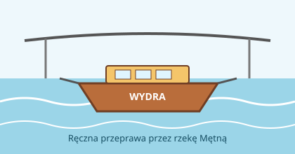

Przeprawa łączy Brzeg Górny z Kępą Łąkową przez rzekę Mętną. Ręczny prom jest ciągnięty po linie rozpiętej nad wodą, a podróż trwa około 6 minut.
Prom mieści 12 osób i 2 rowery. Nie przewozimy samochodów ani motocykli. Kursujemy od 1 maja do 30 września. Przy wysokim stanie wody przeprawa jest wstrzymana.
Aktualny stan rzeki można sprawdzić w serwisie hydrologicznym IMGW.
Komunikaty
Komunikat pierwszy
wymiana liny prowadzącej, sezon rozpocznie się zgodnie z planem.
Komunikat drugi
przy kładce w Kępie Łąkowej stanął nowy, szerszy trap,
rowery można teraz wprowadzać bez zdejmowania sakw.
Rozkład kursów
Maj, czerwiec, wrzesień
Lipiec, sierpień
Dni
Pierwszy kurs
Ostatni kurs
Pierwszy kurs
Ostatni kurs
Poniedziałek–piątek
7:00
18:00
6:30
20:00
Sobota
8:00
19:00
7:00
21:00
Niedziela i święta
9:00
19:00
Cennik
Rodzaj biletu lub przewozu
Cena
Bilet normalny - jedna przeprawa
6 zł
Karnet normalny - 10 przepraw
50 zł
Bilet ulgowy - jedna przeprawa
3 zł
Karnet ulgowy - 10 przepraw
25 zł
Rower
4 zł
Pies
2 zł
Informacje dodatkowe i ulgi
Bilet i karnet ulgowy
Przysługuje dzieciom, uczniom, studentom i seniorom po ukończeniu 65. roku życia
Przewóz roweru i psa
Nie ma karnetów dla psów i dla rowerów
Nasz prom

Jak się przeprawić
Zadzwoń dwa razy dzwonem na słupie przy kładce.
Poczekaj, aż przewoźnik podpłynie promem i przycumuje go do brzegu.
Wejdź na trap dopiero wtedy, gdy prom jest przycumowany.
Po wejściu na prom postaw rower przy burcie i trzymaj go za kierownicę, a następnie usiądź na ławce.
Po zajęciu miejsca uiść opłatę na promie, przed odbiciem od brzegu.
Na drugim brzegu wysiądź dopiero na znak przewoźnika.
Zakazy i ważne zasady
Nie wchodź na prom z psem bez smyczy.
Nie stój przy linie prowadzącej.
Nie skacz z promu do wody.
Nie wnoś na prom szkła.
Dzieci do lat 10 nie mogą płynąć bez opieki osoby dorosłej.
Słowniczek
Przewoźnik
Osoba, która prowadzi prom i odpowiada za pasażerów.
Trap
Pomost między brzegiem a promem.
Lina prowadząca
Stalowa lina nad rzeką, po której prom przesuwa się z brzegu na brzeg.
Cumowanie
Przywiązanie promu do brzegu.
Kępa
Wyspa albo kawałek lądu, który przy wysokiej wodzie bywa zalewany; od niej wzięła się nazwa wsi.